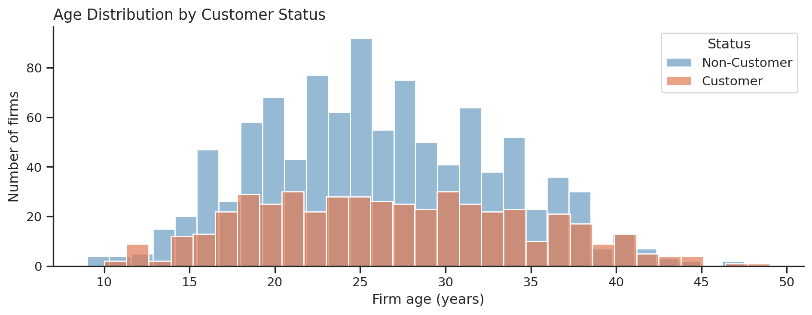
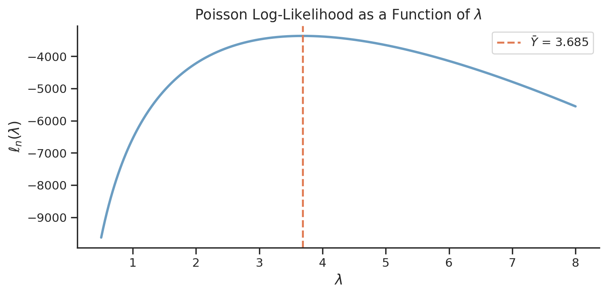

Poisson Regression and Maximum Likelihood Estimation
A Case Study of Blueprinty’s Software and Patent Awards
Author
Stan He
Published
May 17, 2026
Show code
import pandas as pdimport numpy as npimport matplotlib.pyplot as pltimport seaborn as snsfrom scipy.optimize import minimize, minimize_scalarfrom scipy.special import gammalnimport statsmodels.api as smimport warningswarnings.filterwarnings('ignore')sns.set_theme(style="ticks")BLUE ="#6b9dc2"RUST ="#e07b54"
Introduction
Blueprinty makes software that helps engineering firms prepare patent applications for the US Patent and Trademark Office. Its marketing team wants to claim that customers win more patents — a compelling pitch, but a non-trivial one to substantiate.
The cleanest test would be a before-and-after study for each firm, but no such data exists. Instead, Blueprinty has collected a cross-section of 1,500 mature engineering firms, recording patent awards over the last five years alongside each firm’s region, age, and customer status. The complication is that customers are self-selected: firms that buy patent-application software likely differ from those that do not — in region, maturity, and sophistication — and those same differences independently predict patent success. A raw count comparison therefore conflates the software’s effect with pre-existing firm characteristics. The analysis below controls for age and region to isolate the association that remains.
Customers average 4.13 patents over five years versus 3.47 for non-customers — a gap of 0.66. Both distributions are right-skewed and concentrated in the 1–6 range, but the customer distribution is visibly shifted right. Whether this gap reflects the software or the type of firm that selects into it is the central question of this analysis.
Regional Composition by Customer Status
Show code
# Compute customer share per regionrc = df.groupby(['region', 'customer_label']).size().unstack(fill_value=0)rc_pct = rc.div(rc.sum(axis=1), axis=0) *100# Sort so Northeast appears at the bottom (most striking contrast last)rc_pct = rc_pct.sort_values('Customer', ascending=True)fig, ax = plt.subplots(figsize=(9, 4))rc_pct.plot(kind='barh', stacked=True, color=[BLUE, RUST], edgecolor='white', linewidth=0.5, ax=ax)ax.set_xlabel("Share of firms in the region")ax.set_ylabel("")ax.set_title("Customer Share by Region", fontsize=13, loc='left')ax.xaxis.set_major_formatter(plt.FuncFormatter(lambda x, _: f'{int(x)}%'))ax.legend(['Non-Customer', 'Customer'], loc='lower right', framealpha=0.9)ax.grid(False)sns.despine(ax=ax)plt.tight_layout()plt.show()
The Northeast is an outlier: over half its firms (54.6%) are Blueprinty customers, while every other region sits between 15–18%. Since regions differ in their baseline patent activity — driven by industry mix, research institutions, and local patent culture — this geographic concentration creates a confound. A naïve comparison would partly pick up a Northeast effect masquerading as a software effect.
Firm Age by Customer Status
Show code
fig, ax = plt.subplots(figsize=(10, 4))for label, color in [('Non-Customer', BLUE), ('Customer', RUST)]: sub = df[df['customer_label'] == label] sns.histplot(sub['age'], ax=ax, color=color, label=label, bins=30, edgecolor='white', alpha=0.7)ax.set_title("Age Distribution by Customer Status", fontsize=13, loc='left')ax.set_xlabel("Firm age (years)")ax.set_ylabel("Number of firms")ax.legend(title="Status", loc='upper right')ax.grid(False)sns.despine(ax=ax)plt.tight_layout()plt.show()

Customers and non-customers have nearly identical mean ages (26.9 vs 26.1 years), but the distributions diverge at the tails. More importantly, firm age is itself a strong predictor of patent counts — older firms have had more time to build pipelines and institutional expertise — so even subtle age imbalances between groups can bias a naïve comparison. The regression below accounts for this explicitly.
A Simple Poisson Model via Maximum Likelihood
Why Poisson?
Patent counts are non-negative integers. The Normal distribution is a poor fit: it places positive probability on negative and fractional values and is symmetric, whereas count data tend to be right-skewed. The Poisson distribution is the natural starting point, assigning probability
def poisson_loglikelihood(lam, Y):"""Log-likelihood for an iid sample Y ~ Poisson(lambda)."""return np.sum(-lam + Y * np.log(lam) - gammaln(Y +1))
Plotting the Log-Likelihood
Show code
Y = df['patents'].valueslambdas = np.linspace(0.5, 8, 500)ll_vals = [poisson_loglikelihood(l, Y) for l in lambdas]fig, ax = plt.subplots(figsize=(8, 4))ax.plot(lambdas, ll_vals, color=BLUE, linewidth=2.2)ax.axvline(Y.mean(), color=RUST, linestyle='--', linewidth=1.8, label=fr'$\bar{{Y}}$ = {Y.mean():.3f}')ax.set_xlabel(r'$\lambda$', fontsize=13)ax.set_ylabel(r'$\ell_n(\lambda)$', fontsize=13)ax.set_title(r'Poisson Log-Likelihood as a Function of $\lambda$', fontsize=13)ax.legend(fontsize=11)ax.grid(False)sns.despine(ax=ax)plt.tight_layout()plt.show()

The curve is concave with a single peak. The MLE can be read directly off the plot: find the \(\lambda\) on the horizontal axis below the maximum, which coincides with the sample mean (dashed line).
Since \(\mathbb{E}[Y] = \lambda\) under the Poisson model, estimating \(\lambda\) by the sample mean is both the MLE and the intuitively natural choice.
The optimizer returns a value numerically identical to \(\bar{Y}\), confirming the closed-form derivation. Any residual discrepancy is a product of the optimizer’s step-size tolerance, not any mathematical difference.
Poisson Regression
Model Setup
A single shared \(\lambda\) is too coarse: a 40-year-old Northeast firm and a 15-year-old Midwest firm should have different expected patent rates. Poisson regression lets the rate vary across firms as a function of their characteristics:
The exponential link is critical: \(X_i'\beta\) is unbounded, but \(\lambda_i\) must be strictly positive. Exponentiation maps \(\mathbb{R} \to (0,\infty)\), enforcing positivity without constraints. The log-likelihood becomes:
Age squared is included alongside age because the patent–age relationship is likely hump-shaped: firms may ramp up patenting as they mature and accumulate expertise, then slow as their core innovations are already protected. A quadratic term captures this non-linearity without imposing a rigid functional form. One region is dropped (Northeast) because including all five dummies alongside an intercept would introduce perfect collinearity — the five indicators sum to 1 for every observation, exactly replicating the intercept column. All region coefficients are interpreted relative to this Northeast baseline.
The statsmodels GLM coefficients match our hand-coded estimates to four decimal places. Standard errors are close but not identical: statsmodels derives them from the exact observed Fisher information evaluated at the MLE, while BFGS accumulates an approximate inverse Hessian over the optimization path. The GLM standard errors are generally preferred; the BFGS approximation is a convenient shortcut that performs well in practice.
Interpreting the Coefficients
In a Poisson regression, coefficients enter multiplicatively: a coefficient \(\hat\beta_k\) implies that a one-unit increase in \(X_k\)multiplies\(\lambda_i\) by \(\exp(\hat\beta_k)\), all else held constant.
iscustomer (0.2076): The key coefficient. Being a Blueprinty customer is associated with \(\exp(0\.2076) \approx\) 1.231 — a 23% increase in expected patents after controlling for age and region. The z-value of 6.60 indicates this estimate is statistically well-separated from zero.
age and age_sq: A positive linear and negative quadratic coefficient traces an inverted-U relationship — patent activity rises with firm maturity then tapers for the oldest firms, consistent with diminishing innovation returns late in a corporate lifecycle.
Regional dummies: Midwest, Northwest, South, and Southwest all carry small negative-to-zero coefficients relative to the Northeast, confirming the Northeast as the most patent-active region in the sample even after conditioning on age and customer status.
The Effect of Blueprinty’s Software
Counterfactual Simulation
Because the model is multiplicative, the iscustomer coefficient cannot be read directly as additional patents. A more interpretable estimate comes from a counterfactual simulation: predict each firm’s expected patent count twice — once with every firm’s customer status set to 0, and once with it set to 1 — while holding all other characteristics (age, region) at their observed values. The average difference is the estimated effect of Blueprinty’s software.
Holding firm age and region fixed at each firm’s observed values, adopting Blueprinty is associated with approximately 0.79 additional patents over five years — a 23% gain above the counterfactual baseline of 3.44 patents. The distribution of firm-level differences is tightly clustered because the iscustomer coefficient applies a uniform multiplicative shift; the spread reflects variation in age- and region-driven baselines across firms.
The result supports Blueprinty’s marketing claim, but two caveats matter. First, this is an observational study: firms self-selected into the customer base, and unobserved characteristics — R&D investment, quality of patent counsel, technological complexity — may drive part of the remaining association. A randomised experiment or a credible quasi-experimental design would be required to make a causal claim. Second, Poisson regression assumes equidispersion (mean equals variance), which patent counts often violate; a Negative Binomial model or robust standard errors would be natural robustness checks. Subject to these limitations, the controlled analysis provides meaningful evidence consistent with Blueprinty’s claim that its software helps firms file more successful patent applications.